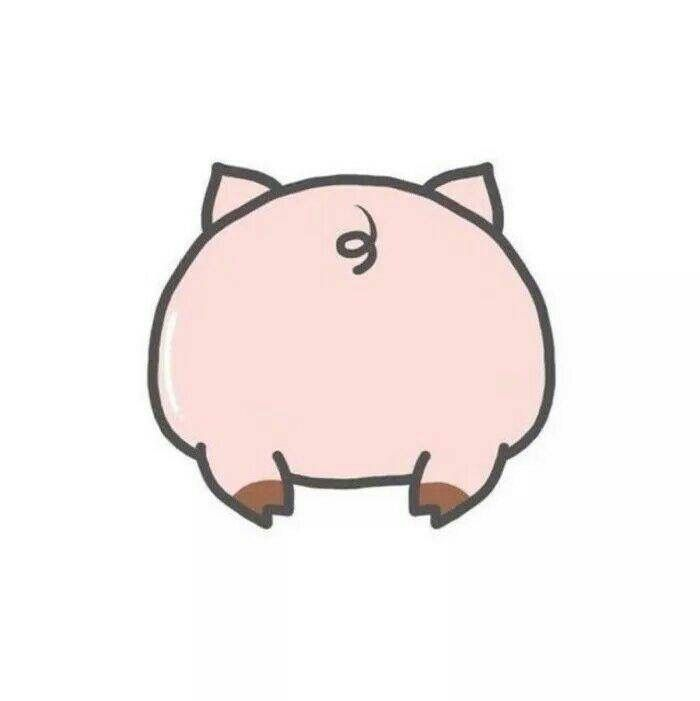
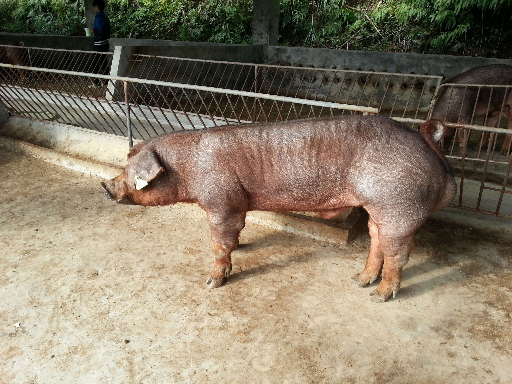

外貌:長著巨型大耳、修長體型。特性:產仔高、性格溫馴。
外貌：直立雙耳。特性：繁育能力優異。
外貌：紅棕色皮毛。特性：肉質有彈性。

外貌:全身黑。特性:生長慢、體型小。
外貌:多為灰色或黑色。
外貌:黑白相間，肚子微下垂。特性:高智商。
 (此圖來自農業知識入口網)
(此圖來自農業知識入口網) (此圖來自農業知識入口網)
(此圖來自農業知識入口網) (此圖來自農業知識入口網)
(此圖來自農業知識入口網) (此圖源自維基百科)
(此圖源自維基百科) (此圖源自維基百科)
(此圖源自維基百科)